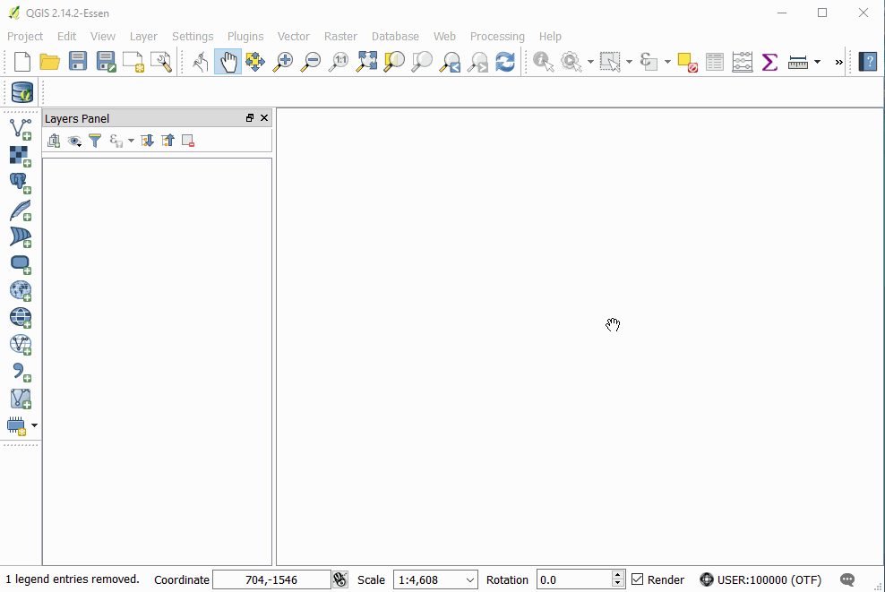

OSGISOMG
Home
Loading Data
Loading data
Vector Data
Adding Basemaps
Loading From Databases
Raster Data
Loading Raster Data
What is Raster Data?
Non-referenced JPG
Geo-Referencing Raster Data
Styling and Sharing
Styling
Sharing Your Map
Managing, Manipulating, Creating Data
Selecting and Modifying Data
GIS Concepts Glossary
Concepts
OSGISOMG
Docs
»
Loading Data »
Raster Data
Loading Raster Data
What is Raster Data?
Common Formats
Loading Raster Data
Non-referenced JPG

Geo-Referencing Raster Data
« Previous
Next »